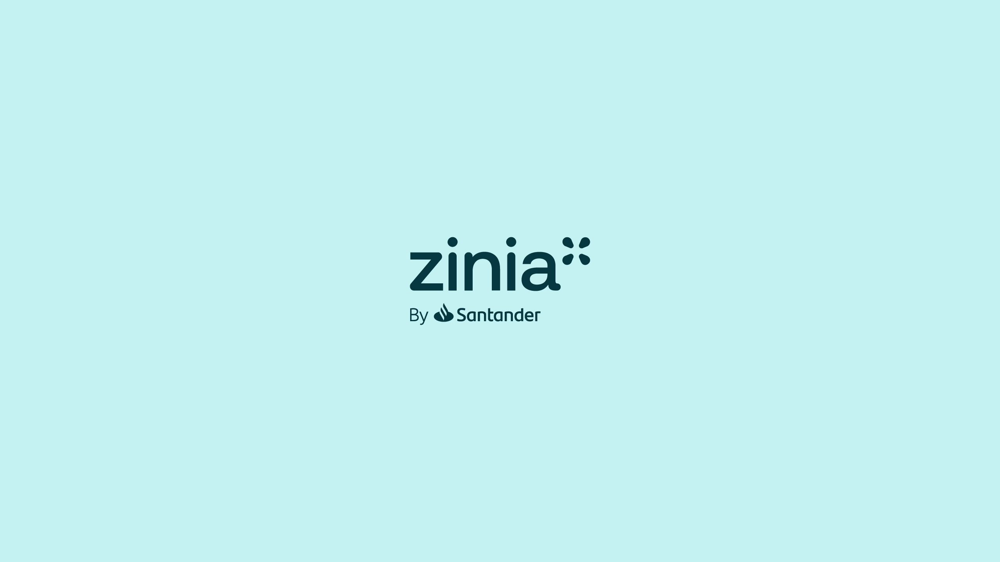
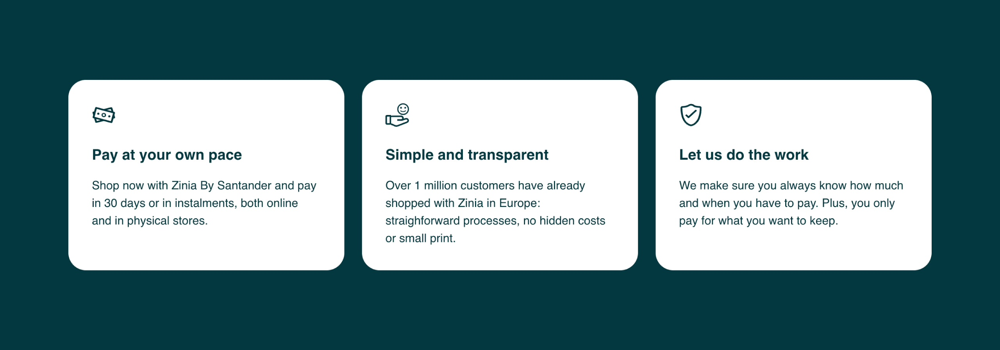
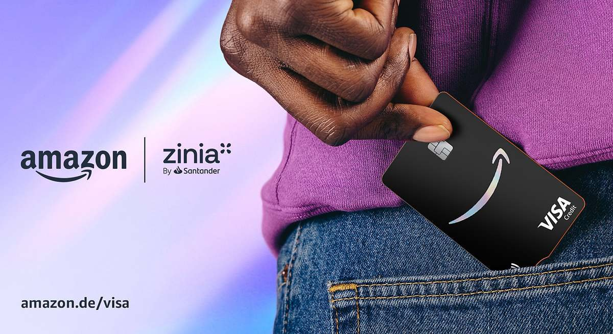

Building trust
at checkout.
How we created Zinia, a responsible BNPL experience inside one of Europe's biggest banks.
01Before there was Zinia
When I joined the initiative in early 2021, there was no Zinia. We weren't branding anything yet. What we had was a hypothesis, and a sense of urgency.
Buy Now, Pay Later was becoming the new normal at checkout. Fintech players were setting the pace: fast onboarding, sleek interfaces, zero interest. But behind the curtain, it was a different story: questionable risk models, confusing fee structures, and very little regulation. Santander wanted to respond, but not by playing the same game. The ambition was to create a BNPL product that felt effortless for the user but was engineered with the caution, control, and clarity expected from a global bank.
We embedded ourselves within Santander Consumer Bank in Germany and started testing the core mechanics of what a better BNPL experience could look like. No brand name, no marketing. Just raw product. That early stealth phase allowed us to learn fast without legacy expectations.
I was brought in as Product Manager for the Customer Experience vertical, responsible for designing the user journey from the first tap at checkout to the final payment confirmation, and everything in between.
02Acting like a fintech without losing the soul of a bank
From day one, we were designing against a triple constraint. Users wanted flexibility, speed, and simplicity. Merchants needed better conversion tools and seamless integration. The business wanted to move fast, but within the regulatory guardrails of a 160-year-old institution.
That tension shaped every product decision. If we made onboarding too slow, we'd lose the user. If we pushed approval too fast, we'd lose control. The problem wasn't just building a BNPL product. It was building one that earned trust from both ends: the shopper and the risk team.
03Testing with real users before we had a name
We launched our pilot in Germany without a single ad or public announcement. What we had was a prototype live in production, offered at checkout through a set of merchant partners. That environment gave us real behavioral data, not just survey insights.
I worked closely with our research leads to analyze where users dropped, hesitated, or got confused. One of the first things we noticed was that people didn't mind identity verification as long as it was immediate and didn't involve paperwork. They were used to mobile-first flows. What they couldn't tolerate was ambiguity. If we didn't make the repayment terms crystal clear upfront, they would abandon. That insight, transparency over surprise, shaped everything.
We started designing for peace of mind, not just speed. We also realized that a large portion of users had no relationship with Santander. This wasn't going to be a product for "our customers." It had to work for anyone.
The call we madeZinia would be fully bank-agnostic. No Santander account required.
04Clarity, speed, and control in one tap
By early 2022, we'd seen enough to commit. We gave the product a name, Zinia, and began formalizing our multi-market rollout plan. But the brand wasn't the change. The mindset was: we weren't chasing our competitors anymore. We were closing their gaps.

My role evolved as we scaled. I led the definition of the customer experience roadmap, bringing design, engineering, legal, and credit risk together around a single vision: make this feel as light and fast as a fintech, but grounded in the logic of a bank.
We focused on scenarios. Every piece of the flow, from SMS verification to flexible repayment options, was calibrated to feel human, not corporate.
Calibrated to feel human, not corporate
The last-minute shopper
At checkout.
The user managing multiple purchases
In the app.
The person who misses a payment
But still deserves to be treated fairly.
Behind the scenes, we added layers of responsible design. Initial credit limits were modest. Reminders were built in. Late fees were capped and delayed, not triggered instantly. That tension, what feels frictionless for the user must be built responsibly for the bank, was the essence of the product strategy.

05Scaling a product across borders and expectations
The formal launch began in Germany, where our pilot had already quietly crossed the two million user mark. We followed with the Netherlands in mid-2022 and then Spain in late 2022. Each market came with its own compliance standards, user behaviors, and merchant expectations. I worked across three countries, adapting core flows without losing consistency.
In parallel, we began deepening the platform's merchant value. I collaborated with our business development and partnerships teams to ensure the Zinia experience worked not only for small online retailers but for massive ecosystems. That preparation paid off when Apple chose Zinia to power device financing in Germany, offering users instant installment options in-store and online. Then Amazon followed, replacing their legacy credit card partner with a co-branded Zinia Visa.


These integrations weren't just PR wins. They were tests of scalability, security, and strategic alignment. And they confirmed something we had suspected early on:
06Proof that trust scales
By late 2023, Zinia had processed over 5.5 million BNPL transactions. More than 75,000 merchants were connected across our three core markets. The app became not just a payment tracker but a control center for spending, returns, and rewards.
But metrics alone don't tell the whole story. What we saw internally was even more important. Users came back. Not once, but again and again. Churn was low. Feedback was consistent. The product didn't just work. It was appreciated.
Zinia had gone from an unnamed pilot in Germany to one of Santander's most successful digital products, positioned to enter 16 markets and power a new kind of consumer finance across Europe.
Zinia imagery is the property of Santander Digital Consumer Bank and the Amazon Visa image of its owners, both shown editorially to illustrate work I contributed to. Figures from Santander's public reporting.